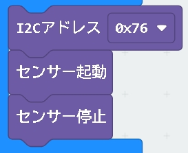

1. BME280を利用するために
＜BME280用拡張機能＞
【拡張機能とは】
micro:bit ™ （以下micro:bitと表記）で環境センサーBME280を利用するためには、MakeCode ™ （以下MakeCodeと表記）のBME280用拡張機能が必要です。
拡張機能はMakeCodeを利用してmicro:bitができることの幅を広げるための機能です。たとえばmicro:bitには無線通信機能があります。Bluetooth通信の利用も可能ですが、MakeCodeの基本ブロックではサポートされていません。MakeCodeの拡張機能からBluetooth通信の拡張機能を追加することでBluetooth通信が可能になります。拡張機能は、パソコンにプリンターを接続して印刷するためにインストールするドライバみたいなものだと思ってもかまいません。
【BME280用拡張機能】
MakeCodeの拡張機能でBME280と検索すると拡張機能が数種類出てきます。シンプルにBME280と表記されたものはmicroPhythonのChineseコミュニティが制作したものです。基本的な機能はそろっているのでこれを利用するのが分かりやすいと思います。
ただ、microPhython Chineseコミュニティの拡張機能はブロック表記が英語であること、取得される数値が整数値であることが弱点といえば弱点です。BME280は環境センサーとはいえ、気象データに特化したセンサーのため、ブロックには一般的に馴染みのない英語（Dew Point＝露点）もあります。
ページ先頭へ
2. 日本語仕様の拡張機能と利用方法
＜日本語仕様の概要＞
BME280拡張機能（日本語仕様）はmicroPhython Chineseコミュニティの拡張機能をベースに日本語移植および機能の変更と追加をを行いました。拡張機能そのものは、ほぼmicroPhython Chineseコミュニティのものと同じです。ただし、ブロック表記の日本語化に加え次の機能が加えられています。
【microPhython Chineseコミュニティからの変更点】
- BME280から出力される気温・気圧・湿度の各数値の桁を整数/小数第１位/小数第２位から選べるようにした。
- BME280が出す気温、気圧を用いて標高差を計算するブロックを加えた。（数値 整数/小数第１位の選択）
- BME280が出す気温の値から飽和水蒸気圧と飽和水蒸気量を計算するブロックを加えた。（数値 整数/小数第１位の選択）
- 露点計算の方法を改良マグヌス式に変更した。（数値 整数/小数第１位の選択）
＜利用方法＞
micro:bitのMakeCodeのエディター画面から拡張機能をクリックし、次のURLを拡張機能の検索に張り付けて検索してください。BME280の拡張機能（日本語仕様）が読み込まれ利用することができいます。
URL https://github.com/tanagogedora/bme280-jp
ページ先頭へ
3. 拡張機能のブロック紹介
(1) センサー制御ブロック

【センサーの電源管理やI2Cアドレスを設定するブロック】
- I2Cアドレスブロック
I2C通信方式でBME280とmicro:bit間の通信（データ授受）を行う際に利用するBME280のアドレスを選択。0x76か0x77。アドレスはモジュールによって異なる。
- センサー起動ブロック
BME280の機能を利用開始するための命令を出すブロック。I2Cアドレスブロックとペアで使用。I2Cアドレスを設定し、センサー利用開始の流れになる。
- センサー停止ブロック
BME280の機能を停止するための命令を出すブロック。
ページ先頭へ
(2) 環境データの基本ブロック
【センサーとしてのBME280が取得した数値を取り出すブロック】
- BME280が取得した数値を取り出すブロック。
- 数値は整数.小数第1位・小数第２位
【気温ブロック】
- 気温データを出力
- 摂氏（セルシウス度 ℃）と華氏（ファーレンハイト度 °F）に対応
【気圧ブロック】
- 気圧データを出力
- パスカル（Pa）またはヘクトパスカル（ｈPa）に対応
【湿度ブロック】
ページ先頭へ
(3) 応用ブロック
【BME280から得られたデータをもとに数値を計算・導くブロック】
- BME280から得られたデータを基に各種数値を計算するブロック
- 数値は整数.小数第1位
【標高差ブロック】
- 気圧と気温を用いて基準点からの標高差を計算
- 基準気圧（基準点の気圧）はユーザーが指定（単位：Pa/hPa）
- 単位はメートル（ｍ）またはフィート（ft）
- 【標高差の求め方】
- 基準点の気圧をP0（PaまたはhPa）、現場の気圧をP（PaまたはhPa）、気温をt（℃）とする
- 標高差Δh（ｍ）は次式で計算できる
-
\( Δh =\frac{\left( \left( \frac{P_0}{P} \right )^\frac{1}{5.257} -1 \right )\times \left(t+273.15 \right )}{0.0065} \)
【式中の数値について】
- t+273.15 気温t℃を絶対温度に変換（単位：K ケルビン）
- 0.0065（℃／m） 対流圏における気温減率（教科書等では0.65℃/100ｍと表記）
【飽和水蒸気圧ブロック・飽和水蒸気量ブロック】
- 気温を用いて飽和水蒸気圧や飽和水蒸気量を計算
【飽和水蒸気圧ブロック】 単位 Pa/hPa
- 【飽和水蒸気圧の求め方】
- 気温をt（℃）とする。
- Tetens(テテンス)の式により飽和水蒸気圧e(t)は次式で求まる
-
\( e(t)=6.1078\times 10 ^ \left( \frac{7.5t}{t+237.3} \right ) \)
Tetens(テテンス)の式は\( e(t)=6.1078\times 10 ^ \left( \frac{at}{t+b} \right ) \)で表される。
上式は気温０℃以上を想定し水面上での数値a=7.5、b=237.3を代入したもの
【飽和水蒸気量ブロック】 単位 g/m3
- 【飽和水蒸気量の求め方】
- 気温をt（℃）とする。
- Tetens(テテンス)の式により求めた飽和水蒸気圧をPとする。
- 飽和水蒸気量a(t)は次式で求まる。
-
\( a(t)=217 \times \frac{P}{t+237.15} = 217 \times \frac{6.1078\times 10 ^ \left( \frac{7.5t}{t+237.3} \right )}{t+237.15} \)
上式は理想気体の状態方程式\( pV=nRT \)から求めた式
【露点ブロック】
- 気温（℃）と湿度から露点を計算
- 単位は℃
- 【露点の求め方】
- 改良マグヌス式を用いて求める
- 気温をt（℃）とする。
- 湿度をRH（％）とする
- 飽和水蒸気量Td（℃）は次式求まる。
-
\( Td= \frac{b \times \alpha}{a-\alpha} \)
-
\( aとbは定数 \) \( a=16.72 \)、\( b=243.12 \)。
\( \alpha=\frac{aT}{b+T}+\ln \frac{RH}{100} \) から求まる。
ページ先頭へ
(4) イベントブロック
【ブロックの条件に合わせた処理（イベント）を行うブロック】
- 気温・気圧・湿度について用意
- 値が「しきい値より大」または「しきい値より小」の時のイベントを指定
ページ先頭へ
Indexに戻る